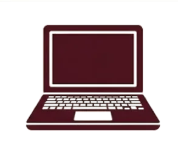

Diplomado en Salud
Una formación introductoria para acercarse al campo de la salud, conocer temas relacionados con el cuidado y el bienestar, y fortalecer una actitud responsable y de servicio.
Saber másOpciones académicas diseñadas para formar profesionales capacitados para la educación superior y el mundo laboral. Conoce cada alternativa y encuentra el camino que mejor se adapta a tus intereses.
Formación integral en áreas científicas, humanísticas y tecnológicas. Fortalece conocimientos, pensamiento crítico y hábitos de estudio para continuar la trayectoria académica y explorar nuevos intereses.
Saber másUna formación introductoria para acercarse al campo de la salud, conocer temas relacionados con el cuidado y el bienestar, y fortalecer una actitud responsable y de servicio.
Saber más
Combina conocimientos académicos y habilidades técnicas en Desarrollo de Software y Asistente Contable. Software incluye programación y proyectos tecnológicos, con acceso a áreas de computación, robótica e impresión 3D.
Formación práctica en Servicios Turísticos y Logística Global Comercial. Turismo integra experiencias vinculadas con la cocina y la posibilidad de realizar prácticas remuneradas.